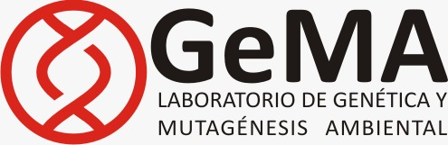
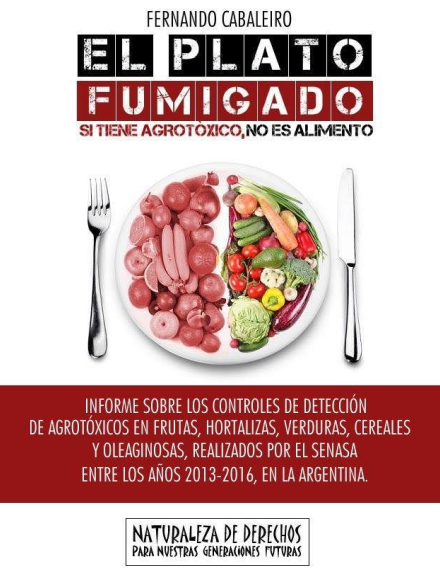
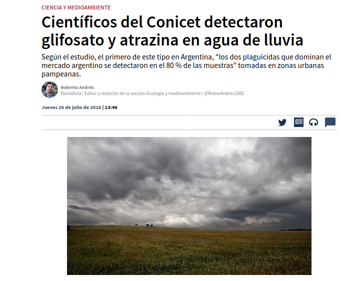
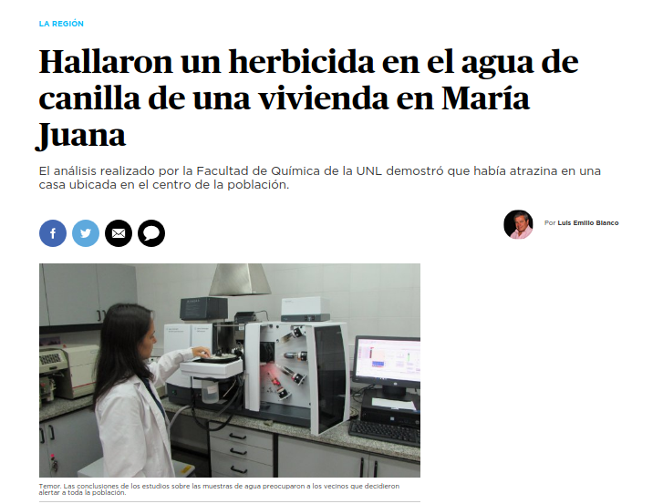
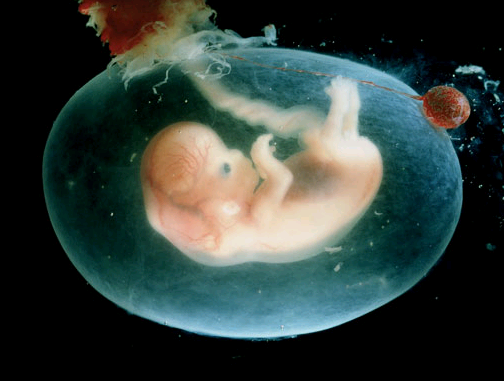
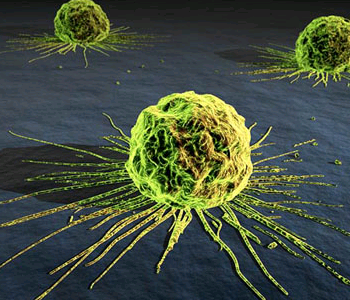
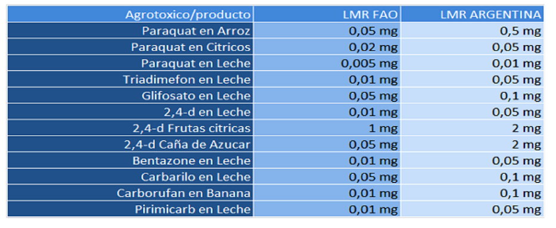
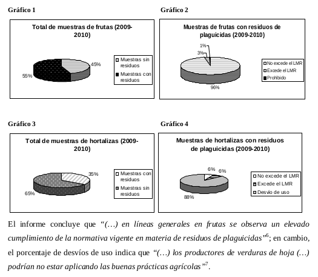
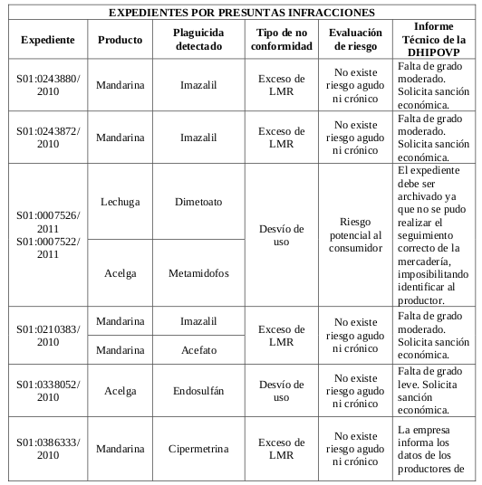
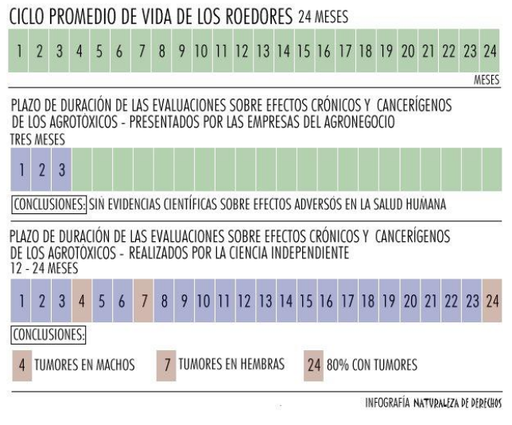

Contaminantes ambientales y su impacto a la salud

www.contaminantesambientales.ar
Universidad Nacional de Río Cuarto
Ignacio Origlia Licencia de producción de pares


Plaguicidas - Agrotóxicos:
- Plaguicidas (insecticidas, herbicidas, funguicidas, rodenticidas, nematicidas, biocidas)
- Fertilizantes Sintéticos
- Inoculantes
- Aditivos
no usamos el término Fitosanitario ni Agroquímico
Vías de exposición
Vía Oral o digestiva:
- Comer cuando se fumiga/pulveriza
- Por consumir alimentos con restos de plaguicidas

Vía Inhalatoria:
- Agrotóxicos adheridos a Sólidos (polvo)
- Agrotóxicos diluidos en Líquidos (vapor)
- Agrotóxicos volatilizados en Gases (mezclados con el aire)
Esta exposición es más importante en ambientes de trabajo pero según las propiedades fisicoquímicas de cada sustancia o mezcla de sustancias pueden moverse por deriva a kilómetros del lugar donde se fumigó y llegar a la población a través del agua de lluvia (ver publicación Original y Traducida )

Vía Dérmica
Depende de:
- Superficie expuesta
- Estado de la Piel
- Liposolubilidad de la sustancia
Esta exposición es más importante (más cantidad de exposición) en ambientes de trabajo pero puede llegar a la población a través del agua corriente como Atrazina en la localidad de María Juana . Al bañarse el herbicida ingresa por los poros de la piel o a traves de superficies con restos de plaguicidas glifosato en hisopos, gasas, algodón, tampones.

Cómo evaluamos un plaguicida?
Toxicidad aguda
Estudiada principalmente a través de la Dosis Letal 50
La dosis de una sustancia que resulta mortal para la mitad de un conjunto de animales de prueba. Generalmente se expresa en miligramo (mg) de sustancia tóxica por kilogramo (kg) de masa del animal y varía a menudo dependiendo del método de administración (oral, intravenoso, etc)
Este tipo de toxicidad es la que más utilizan la mayoría de agencias reguladoras internacionales y nacionales para clasificar los agrotóxicos según su peligrosidad
Clasificación de los plaguicidas
Según guía de la OMS de 2009
Ia - Producto Sumamente Peligroso: Oral (< 5mg / kg) y Dermal (< 50mg / kg)
Ib - Producto muy Peligroso: Oral (5–50mg / kg) y Dermal (50–200mg/kg)
II - Producto Moderadamente Peligroso: Oral (50–2000mg / kg) y Dermal (200–2000mg/kg)
III - Producto Poco Peligroso: Oral y Dermal (2000–5000mg / kg)
IV - Producto que normalmente no ofrece Peligro: Oral y Dermal (5000mg / Kg o más)
Ley de "PRODUCTOS QUÍMICOS O BIOLÓGICOS DE USO AGROPECUARIO N°9164 (Ley de agroquímicos de Córdoba)
CAPÍTULO XV: DE LAS PROHIBICIONES
Artículo 58º: PROHÍBESE la aplicación aérea dentro de un radio de mil quinientos (1500) metros del límite de las plantas urbanas, de productos químicos o biológicos de uso agropecuario, de las Clases Toxicológicas Ia, Ib y II.
Artículo 59º: PROHÍBESE la aplicación terrestre, dentro de un radio de quinientos (500) metros a partir del límite de las plantas urba-nas de municipios y comunas, de productos químicos o biológicos de uso agro-pecuario, de las Clases Toxicológicas Ia, Ib y II.
Artículo 58º: PROHÍBESE la aplicación aérea dentro de un radio de quinientos (500) metros del límite de las plantas urbanas, de productos químicos o biológicos de uso agropecuario, de las Clases Toxicológicas III y IV.
Comentarios sobre la clasificación de los Agrotóxicos de la OMS
- La OMS toma como indicador la DL-50 clasifica los plaguicidas en función de la toxicidad del producto puro o principio activo (no la formulación comercial que puede ser más tóxica que el principio activo solo)
- No se tiene en cuenta la toxicidad crónica, carcinogénesis, teratogénesis, genotoxicidad ni efectos reproductivos de cada producto en dicha clasificación
- No se tiene en cuenta que el plaguicida puede ser transformado tanto en el ambiente como en el organismo expuesto en otros compuestos de igual o mayor actividad biológica
- No se tiene en cuenta que se pueden generar efectos sinérgicos entre la mezcla o coctel de agrotóxicos que se utilizan y que se potenciar el efecto o toxicidad
Comentarios sobre la clasificación de los Agrotóxicos de la OMS
La toxicidad aguda oral en ratas presenta en algunos casos una gran subestimación del riesgo real para los humanos. Por ejemplo, los pesticidas con las tasas de mortalidad humana más altas documentadas: el dicloruro de paraquat y el endosulfán no están clasificados como "extremadamente peligrosos" ni "altamente peligrosos" (es decir, no están en la clase Ia o Ib).
Desde la última revisión de 2009, una gran cantidad de nuevos ingredientes activos han entrado en el mercado, pero sus riesgos aún no han sido clasificados por la OMS.
Los valores de LD50 para la toxicidad por inhalación no están incluidos en la clasificación de la OMS. Esta es una deficiencia importante porque la principal vía de exposición de pesticidas tanto laboral como ambiental es por inhalación.
La disrupción endocrina no está incluida en la clasificación de la OMS.
Cómo evaluamos un plaguicida?
Toxicidad crónica
- No producen efectos precoces visibles
- Suele ser acumulativo y reflejarse en daño a diversos órganos y sistemas
- Se suele asociar a enfermedades en el mediano o largo plazo o en la descendencia de los sujetos expuestos
Procesos relacionados:
- Mutagénesis
- Carcinogénesis
- Teratogénesis o procesos del desarrollo
- Toxicidad para la reproducción
- Toxicidad específica de órganos diana por exposiciones repetidas
Existen plaguicidas que pueden tener una baja toxicidad aguda (clasificados como poco tóxicos según OMS) y a su vez representar un peligro importante para la salud de las personas expuestas durante largos períodos de tiempo; es decir que sus efectos están relacionados a la exposición crónica.
Muchos plaguicidas al ser genotóxicos, pueden alterar la estructura o el ordenamiento de los genes formados por el ADN produciendo mutaciones y desencadenando algunos de los procesos mencionados anteriormente (mutagénesis, carcinogénesis o teratogénesis)
Se estima que más del 90% de los mutágenos químicos son también teratógenos y que la inmensa mayoría de los cancerígenos son mutágenos, por lo tanto son procesos diferentes, pero están relacionados.
De esta forma, todos estos procesos se relacionan con la Genotoxicidad o Toxicidad Genética:
Genotoxicidad
Agrotóxicos y daño genético
Se denominan genotóxicos a aquellos agentes que producen alteraciones estructurales en el material hereditario (ADN), causando cambios o rearreglos en el mismo e induciendo por tanto mutaciones
¿Por qué estudiar la Genotoxicidad?
La acumulación de mutaciones en las células de mamíferos está relacionada con la aparición de procesos neoplásicos (cáncer)
 
Si estas mutaciones se producen durante el embarazo en las células del embrión o feto en desarrollo, pueden llevar a la inducción de malformaciones o incluso abortos. Si las mutaciones se producen sobre óvulos o espermatozoides pueden llevar a alteraciones reproductivas como infertilidad o una mayor incidencia de enfermedades hereditarias
Ensayos de Genotoxicidad
Permiten detectar posibles efectos a largo plazo de sustancias que se introducen al mercado sin conocer con exactitud su capacidad de afectar la salud humana y ambiental
El monitoreo de las potenciales propiedades genotóxicas de un compuesto, así como el biomonitoreo de poblaciones animales o humanas expuestas a sus posibles efectos es una herramienta útil para estimar el riesgo de genotoxicidad derivado de la exposición a un químico o complejo de químicos determinado
Cómo evaluamos un plaguicida?
Plaguicidas altamente peligrosos (PAP) o Highly hazardous pesticides (HHPs)
Nueva categoría de normativa internacional definida por FAO y OMS
Proceso de negociaciones
Comienza en el marco del Enfoque Estratégico para la Gestión de los Productos Químicos a Nivel Internacional ( SAICM ) Aprobado en 2006 en la Primera Conferencia Internacional sobre la Gestión de los Productos Químicos (CIGPQ ó ICCM) en Dubai, Emiratos Árabes Unidos
El SAICM y la ICCM tienen un carácter multisectorial, diseñado para la participación del sector gubernamental, organismos especializados de las Naciones Unidas, el sector privado, las organizaciones de los trabajadores y los grupos de la sociedad civil sin interés lucrativo.
En 2008, durante la segunda reunión conjunta de expertos sobre gestión de plaguicidas de la FAO y la OMS, (JMPM) se aprobaron los criterios para la definición de los plaguicidas altamente peligrosos .
Los plaguicidas altamente peligrosos se definen como los que presentan una o más de las siguientes características:
1) Toxicidad crónica alta: Ingredientes activos o formulaciones de plaguicidas que causan efectos crónicos en la salud humana, los que por lo general se desarrollan lentamente como consecuencia de la exposición repetida a bajas dosis, por un tiempo prolongado.
- Cáncer en humanos: se conoce o presume que el plaguicida puede provocar tumores malignos; categorías de carcinogenicidad 1A y 1B del Sistema Global Armonizado (SGA)
- Mutagénicos en humanos: se conoce o presume que el plaguicida puede provocar mutaciones de las células germinales humanas (óvulos y espermatozoides) que se pueden heredar y causar malformaciones; categorías de mutagenicidad 1A,1B del SGA
- Tóxicos para la reproducción: se conoce o presume que el plaguicida puede causar efectos adversos en la función sexual y la fertilidad o afectar el desarrollo del ser humano antes o después del nacimiento; categorías 1A y 1B del SGA
El Sistema Global Armonizado de clasificación y etiquetado de productos químicos (SGA) (4ta edición en español (2011)) o Globally Harmonized System of Classification and Labelling of Chemicals (GHS) (8va edición en inglés (2019)) es un documento de la ONU que se actualiza desde el 2001 con información acerca de los productos químicos, sus peligros y la manera de proteger a las personas. En este se detallan distintas formas de evaluar una sustancia química como un plaguicida, y se toma como referencia internacional.
2) Toxicidad aguda alta: Plaguicidas con formulaciones que cumplen con los criterios de la categoría de la OMS 1A, 1B
3) Incluidos en Convenios internacionales ambientales vinculantes:
- Convenio de Estocolmo sobre Contaminantes Orgánicos Persistentes: productos químicos que cumplen con los criterios de persistencia, bioacumulación, potencial de transporte a grandes distancias en el medio ambiente, y efectos adversos por su toxicidad o ecotoxicidad en la salud humana y el medio ambiente. Anexos A y B del Convenio
- Convenio de Róterdam sobre el Consentimiento Fundamentado Previo Aplicable a Ciertos Plaguicidas y Productos Químicos Peligrosos Objeto de Comercio Internacional: Incluye ingredientes activos y formulaciones de plaguicidas extremadamente peligrosas que han sido prohibidos en algunos países o rigurosamente restringidos para proteger la salud humana y el medio ambiente. Anexo III
- Protocolo de Montreal de Sustancias que Agotan la Capa de Ozono: sustancias que destruyen la capa de ozono (biocida bromuro de metilo)
4) Los plaguicidas que muestran una alta incidencia de efectos adversos irreversibles o severos a la salud o el ambiente, según las condiciones de uso en el país.
Código de conducta sobre la gestión de los plaguicidas
El concepto de los plaguicidas altamente peligrosos se incorporó en la cuarta actualización del llamado Código de conducta sobre la gestión de los plaguicidas , publicada en 2014.
Este código es un marco de referencia adoptado por FAO-OMS para la regulación sobre las mejores prácticas en la gestión de los plaguicidas, incluyendo su producción, distribución, consumo y manejo de residuos.
Ha sido aceptado por la industria transnacional de plaguicidas y posee algunos puntos importantes:
3.6 "Deberían evitarse los plaguicidas cuya manipulación y aplicación exijan el empleo de equipo de protección personal incómodo, costoso o difícil de conseguir por usuarios en pequeña escala y trabajadores agrícolas".
7.5 "Podrá estudiarse la posibilidad de prohibir la importación, distribución, compra y venta de plaguicidas muy peligrosos si otras medidas de control o las buenas prácticas de comercialización no bastan, sobre la base de una evaluación del riesgo".
En 2016 la FAO y la OMS dieron a conocer las Directrices sobre los plaguicidas altamente peligrosos con el objetivo de ayudar a los países a interpretar y aplicar los artículos relacionados con ellos en el Código de Conducta de Gestión de Plaguicidas
Las Directrices FAO-OMS invitan a los gobiernos de los países a diseñar un proceso que comprende tres grandes pasos con sus respectivas acciones:
- Paso 1: Identificación de los plaguicidas altamente peligrosos
- Paso 2: Evaluación de riesgos a la salud y el medio ambiente
- Paso 3: Acciones de mitigación
Al evaluar los aspectos económicos de la evaluación de riesgo plantean que deben estudiarse "los costos directos e indirectos, desde la necesidad de uso de equipo de protección personal, hasta los gastos médicos de atención por los daños a la salud a corto y largo plazo, así como los gastos públicos a largo plazo de las comunidades rurales y consumidores, los costos ambientales asociados con la contaminación del agua, la pérdida de biodiversidad (incluidos los polinizadores) y los residuos en los alimentos" (Los Plaguicidas Altamente Peligrosos en México)
Pero...
1) Enfoque estratégico (SAICM) y el codigo de conducta con las directrices son marcos de referencia; no son instrumentos jurídicos vinculantes y carecen de mecanismos de sanción en caso de no cumplirse, es decir que su cumplimiento depende de la voluntad política de los actores involucrados
2) La definición de PAP de la OMS-FAO deja fuera de análisis varios aspectos importantes...
Red Internacional de Acción en Plaguicidas
La Red Internacional de Acción en Plaguicidas propone una serie de criterios adicionales para definir los plaguicidas altamente peligrosos
Toxicidad Aguda:
1) Incorporan la Toxicidad por aspiración según SGA: Plaguicidas que se sabe que presentan peligro de toxicidad por aspiración en el ser humano.
Toxicidad Ambiental: (categoría completamente nueva)
2) Bioacumulable: potencial de un plaguicida de concentrarse a través de la cadena trófica y que puede causar efectos tóxicos.
3) Persistente en el agua, suelo o sedimentos: que van a tardar meses, y hasta años, en degradarse para dejar de ser tóxicos.
4) Toxico para organismos acuáticos según SGA: Plaguicidas que pueden causar la muerte de peces, crustáceos o algas en ríos, lagos y el mar. Evaluando tanto el peligro agudo (a corto plazo) y crónico para el medio ambiente acuático
5) Tóxico para las abejas: Se incluyen los clasificados por la EPA de Estados Unidos como “Altamente tóxico para las abejas” por tener una dosis letal media menor de 2 microgramos por abeja (DL 50 , μg/abeja < 2).
Toxicidad Crónica:
Basándose en guías internaciones como el Sistema Global Armonizado (SGA) adoptado por la Unión Europea, la Agencia Estadounidense de Protección Ambiental (EPA) y la Agencia Internacional para la Investigación del Cáncer (IARC) de la OMS incorporan:
Carcinogénesis: Plaguicidas Categoría 1 y 2 de la EPA (cancerígenos humano o probable cancerígeno humano), Categoría 1 y 2A de la IARC (cancerígenos humano o probable cancerígeno humano)
Disruptor endócrino: Incluye los plaguicidas de la Categoría 1 del SGA adoptado por la Unión Europea o Cancerígenos humanos categoría 2 o Tóxicos para la Reproducción Categoría 2 del SGA
El resto de categorías de Toxicidad Crónicas definidas por la OMS-FAO se mantienen (Tóxicos para la Reproducción, Cancerígenos y Mutagénicos categoría 1A, 1B)
Disruptor endócrino o disruptor hormonal
"El sistema endocrino regula cada aspecto de la salud humana, desde el desarrollo en el útero, al crecimiento, hasta la reproducción, y la salud en general. Aún cantidades muy pequeñas de estas sustancias (plaguicidas DE), o mezclas de ellas, perturban el sistema endocrino, reduciendo la inteligencia, perturbando los sistemas reproductivos y causando otros problemas de salud. De hecho, puede que no exista un nivel seguro de exposición especialmente cuando las personas tienen cientos de estas sustancias químicas en sus cuerpos".
Gore, A., D. et al. (2014). Introducción a las sustancias químicas que perturban el sistema endocrino (EDCs). Guía para las organizaciones de interés público y para los responsables de formular políticas públicas. San Francisco, Endocrine Society- IPEN.
"Si la exposición a una alimentación que contiene residuos de disruptores endocrinos se produce durante los primeros estadios de la vida, se expone a estos grupos a lesiones irreversibles, dando lugar a patologías o enfermedades que no se manifiestan hasta la infancia o ya de adultos"
Mujeres Embarazadas como grupo de riesgo muy alto, Informe Plato Fumigado de Fernando Cabaleiro
En el mencionado informe recomiendan también la lectura de Directo a tus Hormonas, Residuos de plaguicidas con capacidad de alterar el sistema endocrino en los alimentos españoles
Finalmente detallan:
Enfermedades Relacionadas con Disruptores Endócrinos
- Salud reproductiva femenina (Pubertad precoz, cáncer de mama, disminución de la fecundidad/fertilidad)
- Salud reproductiva masculina (Malformaciones en genitales de bebés, disminución de la calidad del semen, cáncer de testículo y próstata)
- Trastornos del metabolismo (obesidad, diabetes)
- Problemas cardiovasculares.
- Alteraciones y enfermedades neurológicas (Perturbaciones del desarrollo neurológico y alteraciones conductuales, como Trastorno de Déficit de Atención e Hiperactividad, Autismo, etc; y enfermedades neurodegenerativas como el Parkinson)
En 2009 PAN Internacional publicó la primera versión de la lista de plaguicidas altamente peligrosos desarrollada por expertos de PAN Alemania. Año a año, en función de nuevas evidencias, legislaciones, acuerdos internacionales y revisión de criterios van actualizando la lista.
La última lista (marzo 2019) posee 310 plaguicidas clasificados como altamente peligrosos. Además, actualizan la lista de plaguicidas prohibidos en cada país (lista prohibidos 2019 y su explicación)
También generan materiales de divulgación como:
- ¿Qué son los Plaguicidas Altamente Peligrosos (PAP)?
- Agroecología, La solución frente a los plaguicidas altamente peligrosos
- Guía preventiva de exposición a plaguicidas
{kind=link}
Adjuntamos aquí algunas de las fuentes que utiliza PAN Internacional para armar la lista:
-Clasificación del Sistema Global Armonizado (SGA) adoptado por la Unión Europea
-Clasificación de la Agencia Estadounidense de Protección Ambiental (EPA)(Carcinogénesis)
-Clasificación de la Agencia Internacional para la Investigación del Cáncer (IARC) de la OMS (Carcinogénesis)
-Monografía de la IARC N°112 Recategorización del Glifosato como Probable Cancerígeno humano (2A)
Plaguicidas altamente peligrosos autorizados en Argentina
Existen 430 principios activos registrados en Argentina para uso agrícola donde 123 productos pueden ser categorizados como altamente peligrosos en actividades agricolas intensivas, extensivas, domiciliarios, jardineria o campañas sanitarias. Es decir un 28,4% o casi 1 de cada 3 productos registrados son PAP.
- 51 (41,4%) son insecticidas y acaricidas
- 10 (8,1%) son acaricidas unicamente
- 27 (21,9%) son herbicidas
- 20 (16,2%) son fungicidas
- 5 (4%) como biocidas
- 2 (1,6%) como reguladores del crecimiento vegetales
- 2 (1,6%) como nematicidas
- 3 (2,4%) como rodenticidas
- 3 (2,4%) como curasemillas
La lista PAN posee 310 PAP a nivel mundial, de forma que los 123 autorizados en argentina representan el 39,6% de los PAP que existen a nivel mundial.
Lista de los Plaguicidas altamente peligrosos autorizados en Argentina (Ver Aquí)
Elaborada en base a la lista del Informe sobre los plaguicidas altamente peligrosos en la Argentina publicado por Souza Casadinho en 2019, re adaptado para mejorar la visual agregando también la banda o color de cada plaguicida (segun la clasificación de la OMS adoptada por SENASA), el tipo, el uso, detallando los que prohibidos en otros países, los encontrados en alimentos según el Informe Plato Fumigado de Fernando Cabaleiro publicado en 2018
La Fuente utilizada para definir el color de la banda del plaguicida (peligrosidad según toxicidad aguda) fue CASAFE (Cámara de Sanidad Agropecuaria y Fertilizantes) a través de su guía online, SENASA a través de una lista de principios activos disponible en el Sitio Web del Registro Nacional de Terapéutica Vegetal y el INTA a través de un Manual de uso seguro y responsable de agroquímicos en cultivos frutihortícolas
En el siguiente Sitio Web se puede encontrar información más detallada de los cultivos específicos donde se utiliza cada Plaguicidas de la lista mencionada (Ver Aquí)
Registro de plaguicidas en Argentina
Otorgado por SENASA a través del MANUAL DE PROCEDIMIENTOS, CRITERIOS Y ALCANCES PARA EL REGISTRO DE PRODUCTOS FITOSANITARIOS EN LA REPUBLICA ARGENTINA, (Res. N°350/99) y del Reglamento para el Registro de Fertilizantes, Enmiendas, Sustratos, Acondicionadores, Protectores y Materias Primas en la República Argentina. Resolución SENASA 264/2011
Para registrar un plaguicida se deben entregar análisis relacionados con las propiedades fisico-químicas del principio activo, que puede estar realizado por organismos públicos o privados y un sumario de investigación de los aspectos toxicológicos teniendo en cuenta los aspectos y dosis que pueden generar toxicidad aguda y también toxicidad crónica y carcinogenicidad según las directrices 452/453 de la OCDE (Organización para la Cooperación del Desarrollo Económico)
Esta información es evaluada por un por profesionales expertos independientes especializados en toxicología y eco toxicología, en el marco de la Resolución SENASA 389/2015 determinando la dosis sin efecto adverso observado (NOAEL), es decir, el nivel de agrotóxico que no produce ningún daño y sobre este valor tomar un margen de seguridad, que por lo general es de 100, para determinar la Ingesta Diaria Admisible (IDA), la cual es propuesta a SENASA para que realice la evaluación del riesgo al consumidor y establezca el Límite Máximo de Residuos (LMR), es decir, el nivel máximo de residuos de un plaguicida que se permite legalmente en los alimentos.
La Trampa
Según el manual citado (Res. N°350/99) en su capítulo 18, establece que la autoridad de aplicación puede "cancelar o reclasificar el registro de un producto fitosanitario, cuando los usos autorizados de ese producto puedan causar efectos adversos, en las condiciones locales de uso, inaceptables tanto para la salud como para el ambiente."
Por ejemplo si
"Pueda suponer un riesgo de inducir en humanos un efecto oncogénico, genético hereditario, teratogénico, fetotóxico, reproductivo, o un efecto crónico o tóxico demorado, cuyo riesgo es de importancia en términos del grado de riesgo a la salud o el número de humanos expuestos a algún riesgo, basado en: Los efectos demostrados en humanos o en animales experimentales o Los niveles de exposición conocidos o presupuestos de varios grupos humanos."
- La última revisión toxicológica de los agrotóxicos (como principios activos o formulados) en la Argentina fue en el año 2000. Es decir que toda la producción científica de los últimos 20 años todavía no ha sido tenida en cuenta por SENASA.
- Además, los protocolos o directrices 452/453 de la OCDE (toxicidad crónica y carcinogenesis) fueron creados recién en el año 2009 y la mayoría de las autorizaciones de principios activos (muchas de las cuales hoy consideramos como PAP) son previas.
LMR
La Resolución de SENASA 256/2003 estable la tolerancia o límites máximos de residuos de plaguicidas que luego se actualizó en la Resolución 934/2010 donde también se establecen los tiempos de carencia según el principio activo y cultivo y un listado de los que están prohibidos o restringidos según leyes, decretos, disposiciones o resoluciones vigentes
En el Registro Nacional de Terapéutica Vegetal del Sitio Web del SENASA se puede consultar los LMR y principios activos registrados a Enero del 2020
Sobre este tema, resulta importante mencionar 2 informes que se discuten en las próximas diapositivas:
- Informe sobre el cuestionario de las relatorías especiales del derecho a la alimentación y derechos humanos y sustancias y desechos peligrosos de la ONU publicado en 2016
- INFORME DE AUDITORIA AUDITORÍA GENERAL DE LA NACIÓN al SENASA para evaluar acciones de control de agroquímicos de 2007 a 2011
Informe ONU 2016
"Si bien la FAO en materia de determinación de los LMR mantiene una preocupante omisión de actualización de los mismos, varios parámetros del orden local están muy por encima de los establecidos por el organismo internacional"
Informe Auditoría SENASA 2011
De las 274 muestras en frutas, se detectaron residuos de plaguicidas en 152 casos (55,3%) y de las 135 muestras de hortalizas, se detectaron residuos de plaguicidas en 47 casos (34,8%). Por otro lado en 87% de los casos se trataba de productos que no están autorizados para el cultivo en el que fueron encontrados

Se constató la presencia de Imazalil (EPA probable cancerígeno, Disrupción endocrina categoría 2), Cipermetrina (Disruptor endocrino categoría 2, Genotoxicidad positiva, EPA Posible carcinógeno humano), Acefato (EPA Posible carcinógeno humano, Genotoxicidad positiva, Neurotoxicidad nivel 2, Disruptor endocrino categoría 2) clorpirifos (neuropatía retardada (síndrome intermedio) por exposiciones sub-agudas), Lambdacialotrina (Mortal si se inhala , Disruptor Endócrino Categoría 1), sin embargo se consignó en el informe de control que no existe riesgo agudo ni crónico en ninguno de los casos

Plaguicidas: los condimentos no declarados
En una Investigación dirigida por Damián Marino de la Universidad Nacional de La Plata se analizaron 47 muestras de frutas y hortalizas analizando presencia de plaguicidas de uso actual según su acción y familias químicas:
-Insecticidas: organoclorados (Endosulfanes: Prohibido desde 2012, Muy tóxico por inhalación, Disrupción endocrina categoría 1, genotoxicidad positiva AC), organofosforados (Clorpirifos) y piretroides (Cipermetrina, Lambdacialotrina) (Estos 3 ya descriptos en la diapositiva anterior)
-Fungicidas (Tebuconazole, Epoxiconazole: EPA probable cancerígeno (C. 2), U.E. Disruptor Endócrino (C. 1) o cancerígeno (C. 2), U.E Tóxico para la reproducción (C. 1))
-Herbicidas (Atrazina: U.E. Disruptor Endócrino (C. 1) o cancerígeno (C. 2)).
El 76,6% (n=36) de las muestras analizadas de frutas y verduras dieron resultados positivos de residuos de plaguicidas
LMR: Del total de datos en los que se pudo llevar a cabo dicho análisis (n=39), el 7,7% supera los valores permitidos
Mercado Central de Buenos Aires
En 2016 se realizó una jornada donde se presentaron datos sobre el uso de Agroquímicos en Hortalizas de Hojas, donde se encontró un aumento de los “análisis de residuos excedidos” de un 5% en dos años, con tendencia en aumento
La lechuga encabezó la lista de cultivos con mayores problemas, con muestras excedidas un 47% seguidas por el Apio 21%, la Espinaca 15%, el Pimiento 7% y la Acelga 6%
Los principales principios activos encontrados fueron:
-Clorpirifos: ya descripto
-Profenofos
-Metamidofos
-Dimetoato: Posible carcinógeno humano por la EPA, Disruptor endocrino: categoría 2. Genotoxicidad: positiva AC, Teratogenicidad positiva, Neurotóxico: nivel 2 (colinérgica)
-Carbofuran: Considerado Neurotóxico: nivel 2 (colinérgica). Es Disruptor endocrino: categoría 2
Finalmente...
"la aceptación de los residuos de agrotóxicos en los alimentos por parte de los entes u organismos oficiales y órganos internacionales continentales e intercontinentales, se ha sustentado en una información científica que ha sido retractada"
Impacto a la Salud de los plaguicidas
Mapa de la soja vs mapa de mortalidad por cáncer
Tienen puntos en común?
Campamentos Sanitarios
Damian Verzeñassi y su equipo, en el marco de la práctica final de la carrera de medicina de la UNR, realizaron desde 2010 relevamientos epidemiológicos en mas de 37 localidades principalmente agrícolas de cuatro provincias de Argentina (Santa Fe, Entre Ríos, Buenos Aires y Córdoba)
Entre las principales afecciones aparecen:
- Hipertensión Arterial (identificada en las estadísticas oficiales como la enfermedad crónica mas frecuente en Argentina)
- Hipotiroidismo, que le sigue en prevalencia
- Diabetes Tipo II (que en los informes sanitarios oficiales es la segunda en prevalencia en el país).
- Alergias de diversos tipos, patologías reumatológicas.
- Incremento de Abortos espontáneos, malformaciones congénitas
- Incremento de Enfermedades oncológicas
- Incremento de enfermedades alérgicas respiratorias y pulmonares obstructivas (como asma o EPOC),
- Alzheimer o enfermedad de Parkinson que aparecen antes de lo que deberían aparecer según estadísticas nacionales e internacionales
En el artículo Transformaciones en los modos de enfermar y morir en la región agroindustrial de Argentina publicado en 2019, Verzeñassi menciona que:
"La tasa nacional anual de incidencia de cáncer fue de 217 por 100 mil habitantes (con un rango esperado entre 172.3-242.9/100 mil habitantes) y, para el mismo año, según las referencias de los vecinos entrevistados, la tasa de incidencia anual promedio de cáncer en las localidades donde se realizó el Campamento Sanitario (teniendo en cuenta las localidades visitadas desde el 2013) es de 397.4/100 mil habitantes, es decir, 1.83 más que el promedio nacional y 1.63 más alto que el máximo esperado para nuestro país."
El 75% de quienes identificaban fuentes contaminantes, se referían a elementos vinculados al modelo agroindustrial de OGM’s dependiente de venenos
Más del 90% de las personas entrevistadas vivían a menos de 1000 metros de las zonas en las que se produce en base al paquete tecnológico agroindustrial
VALORACIÓN DE LA EXPOSICIÓN A PLAGUICIDAS EN CULTIVOS EXTENSIVOS DE LA ARGENTINA Y SU POTENCIAL IMPACTO SOBRE LA SALUD Informe Completo Aquí
Informe financiado por el Ministerio de Salud de la Nación, publicado en 2015. En los resultados menciona:
"El área pampeana agrupa los Índices de Exposición a Plaguicidas (IEP) mayores al promedio nacional
"Los mayores Índices de Impacto Ambiental Total (IIAT) fueron para 2,4-D y Clorpirifos en igual zona. Niveles altos de IIAT de Cipermetrina y Clorpirifos se asocian con más mortalidad de cáncer de mama y los de Glifosato y Clorimuron con la de cáncer total en varones"
"Síntomas generales, cardiorrespiratorios, dérmicos y daño genotóxico fueron mayores en aplicadores. Sus niños presentan síntomas irritativos en un 30%, más de la mitad está expuesto a aplicaciones, vive a menos de 500m de depósitos y van a escuelas a 500m de campos fumigados"
"Un 20% asiste en tareas de campo sin elementos de protección personal o cobertura de obra social"
¿De la pandemia del agronegocio quién nos cuida?
¿De la pandemia del agronegocio quién nos cuida?
¿De la pandemia del agronegocio quién nos cuida?
¿De la pandemia del agronegocio quién nos cuida?
¿De la pandemia del agronegocio quién nos cuida?
Use a spacebar or arrow keys to navigate.
Press 'P' to launch speaker console.